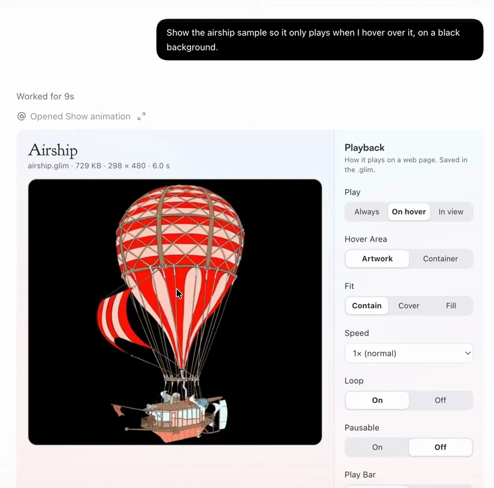
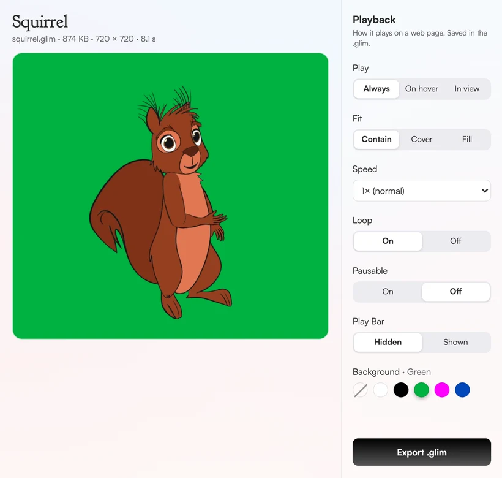

You asked your assistant for a little animated bakerya pink bakery, the baker waving from under the striped awning
For assistants and agents
Connect an assistant.
Glimmerglass has an MCP server. Any assistant or coding agent that speaks MCP can convert an animation, show it playing and hand back the .glim with the code for your site.
Server address
https://convert.glimmerglass.app/mcp- Add the addressPaste it into your assistant as a custom connector. The steps for ChatGPT, Claude and the others are below.
- Sign in with your keyYou sign in with your license key the first time you convert. Need a license key?
- Ask for a .glimGive it an animation. It shows it playing and hands back the .glim with the code for your site.
What it can do
Six tools. Only converting needs a license key; everything else works without one.
Convert an animation
convert_animationTurns an animated WebP, GIF, APNG, MOV, MP4 or WebM with transparency, up to 256 MB, into a .glim.
Needs a license keyFollow a long conversion
check_conversionKeeps checking a long conversion until it is done.
Play it in the chat
show_animationPlays the animation in the conversation, with its playback settings beside it.
Export the .glim
export_glimWrites the playback settings into the .glim and returns a download link and the embed code.
Explain the problem
get_transparent_animation_helpWhy a transparent animation goes wrong on the web, and what a working setup needs.
Try a sample
list_animationsSample animations to try it with.
No key needed
ChatGPT
Until Glimmerglass is listed in ChatGPT's app directory, open Plugins in the ChatGPT app, choose Add, then Add custom MCP server. Enter the address above, leave Authentication on OAuth, and connect. Sign in with your license key the first time you convert.


Claude
In Claude, open Customize, Connectors, and add a custom connector with the address above. Under Authentication choose Sign in when needed, and under OAuth client choose Register automatically. Sign in with your license key the first time you convert. Claude cannot pass a file you attach to a connector, so give it a link, or it will give you a private page to upload the file on.


Claude Code
claude mcp add --transport http glimmerglass https://convert.glimmerglass.app/mcp --header "Authorization: Bearer YOUR-KEY"Cursor and other MCP clients
{ "mcpServers": { "glimmerglass": { "url": "https://convert.glimmerglass.app/mcp", "headers": { "Authorization": "Bearer YOUR-KEY" } } } }Agents are welcome. There is no CAPTCHA and no sign-up beyond the key, and everything except converting works without one; the limits are the ones every key has, set far above what one person does.